Guida completa all'utilizzo di JW Time
Vai in Impostazioni → Generale → Lingua e seleziona l'idioma desiderato. Questo scaricherà in automatico la scaletta corretta (se disponibile per quella lingua) e la imposterà per la settimana corrente.
Sempre in Generale, scegli il monitor esterno e attiva Abilita Schermo Contatempo. (Facoltativo): abilita il formato 12 h oppure attiva lo Studio biblico adattivo e/o lo Studio Torre di Guardia adattivo. L'app regolerà automaticamente la durata di queste parti per aiutarti a rispettare l'orario di chiusura dell'adunanza.
Dalla barra in basso apri Programma: dovrebbe già mostrare Infrasettimanale o Fine Settimana in base al giorno. (Se vuoi personalizzare) scegli Manuale.
Premi ▶ Start per iniziare. Usa ❚❚ Pausa nei cambi oratore e ▶▶ Successiva per passare alla voce successiva. Tieni d'occhio l'Orario Fine Stimato.
Premi Messaggio e invia un testo a tutto schermo o a schermo parziale: comparirà sul monitor del Contatempo.
Alla fine premi ⏹ Stop per chiudere la scaletta. Se usi il Monitor Web, puoi stampare la scaletta o seguirla da browser sulla stessa rete.
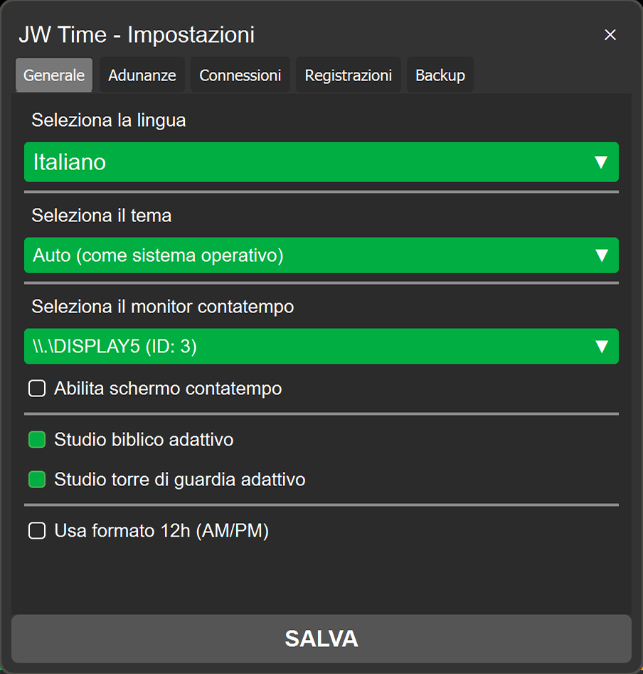
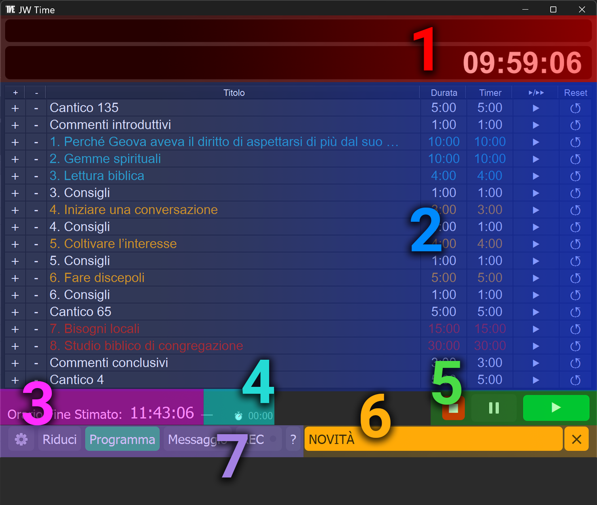
La schermata principale è il cuore dell'applicazione. Da qui puoi avviare, gestire e monitorare tutti i timer dell'adunanza, visualizzare le informazioni principali come il titolo della parte in corso, l'orologio e il tempo residuo, oltre a controllare messaggi e notifiche importanti.
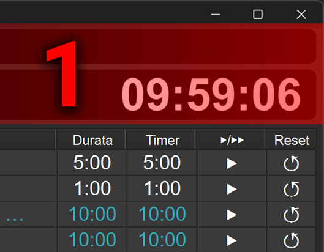
Nella riga superiore viene mostrato il titolo della parte in corso, mentre sotto è visualizzato l'orologio con l'ora corrente o, quando avvii un timer, il countdown del tempo rimanente. In formato 12 ore compare anche il suffisso AM/PM in dimensioni ridotte per migliorare la leggibilità.
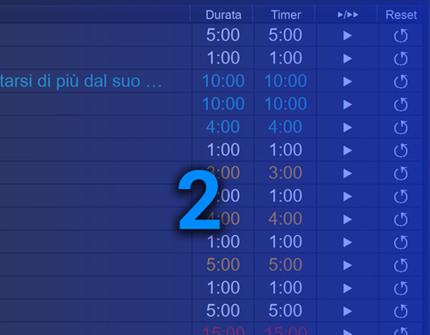
Elenca la scaletta dell'adunanza (titolo, durata, stato). Il contenuto si carica automaticamente in base al giorno selezionato: l'app riconosce se è Infrasettimanale o Fine Settimana e propone la scaletta corretta. Per i pulsanti e le azioni dettagliate vedi 2. Manipolazione dei Timer.
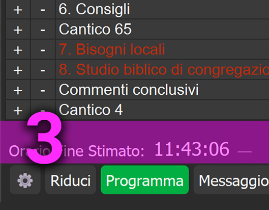
Mostra l'ora prevista di chiusura in base alla scaletta. Accanto compare lo scostamento:
+m:ss (giallo entro 1', rosso oltre) = ritardo
−m:ss (verde) = anticipo
L'orario e l'indicatore si aggiornano in tempo reale. Se sono attivi gli adattivi per Studio biblico / Torre di
Guardia, le durate vengono ricalcolate per rientrare nell'orario di chiusura.
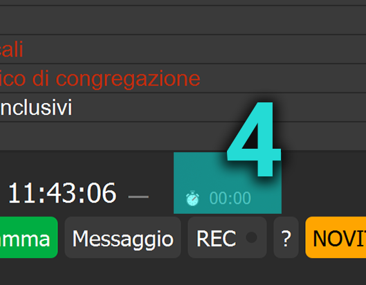
Contatore cumulativo hh:mm:ss del tempo passato in pausa o cambio oratore. Un clic sull'indicatore azzera il totale.
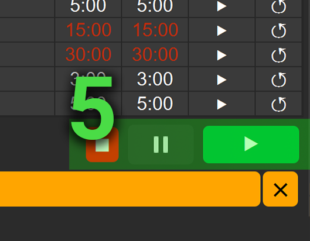
Controlli per avviare, fermare e gestire i timer: Stop (rosso), Pausa, e Start/Successiva (verde). Il pulsante Pausa incrementa il tempo pausa/cambio oratore.
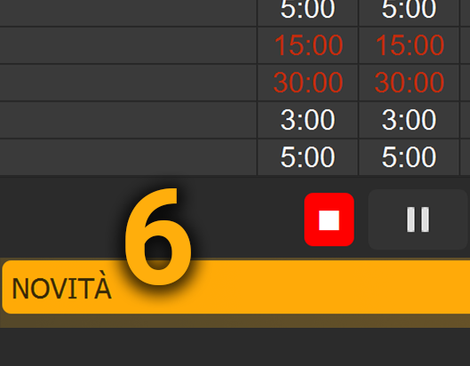
Quando ci sono comunicazioni ufficiali per l'app, nella Schermata Principale compare un riquadro/avviso "Notizie". Cliccandolo si apre il pannello con il riepilogo degli aggiornamenti.
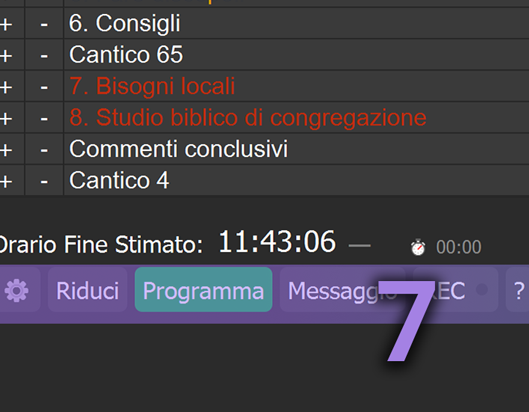
Barra con pulsanti Impostazioni, Riduci/Ingrandisci, Programma (selezione settimana), Messaggio e Manuale online. Per approfondimenti vedi i capitoli dedicati.
Questa sezione illustra le principali operazioni di gestione dei timer — come aggiungere, modificare o eliminare voci — e l'uso dei comandi di avvio, salto e reset.

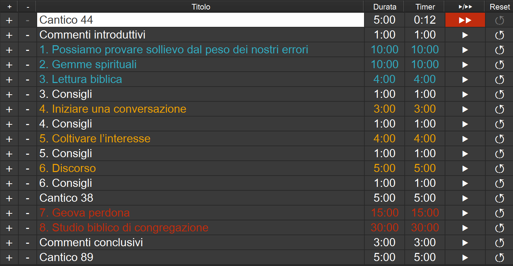
Il timer si aggiorna costantemente, sincronizzando i valori di Durata e Timer nella tabella con il countdown in corso, anche se vengono modificate le durate o cambiata la parte.
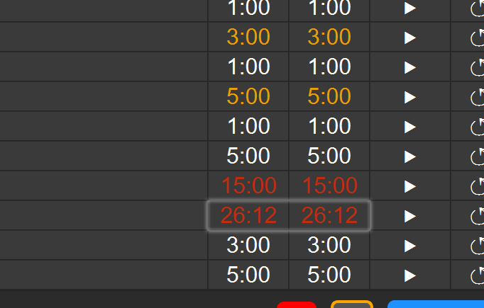
Se in Impostazioni → Generale sono attivi Studio biblico adattivo e/o Studio Torre di Guardia adattivo, l'app adatta dinamicamente la durata della parte selezionata per mantenere l'orario di chiusura dell'adunanza. L'adeguamento riguarda solo le parti con opzione attiva e può aumentare o ridurre automaticamente i minuti in base all'anticipo/ritardo accumulato. L'Orario Fine Stimato e lo scostamento si aggiornano in tempo reale. Puoi sempre intervenire manualmente sui timer: l'adattivo ricalcola partendo dalla nuova situazione.
Il popup di inizio adunanza appare automaticamente all'ora impostata con il messaggio scelto, mentre lo Schermo Contatempo mostra clock e countdown su un monitor esterno.
Appare all'orario impostato e mostra il messaggio personalizzato insieme al countdown. Si chiude automaticamente allo scadere del tempo.

Quando attivi "Abilita Schermo Contatempo" dalle impostazioni, ottieni una visualizzazione a schermo intero su un monitor esterno, ideale per il podio o il presidente.
La funzione Messaggi consente di comunicare in modo discreto e chiaro con l'oratore durante l'adunanza, permettendo di avvisarlo o dargli indicazioni senza interrompere o disturbare lo svolgimento della parte. I messaggi appaiono sullo schermo del contatempo, così l'oratore li vede in tempo reale senza distrazioni.
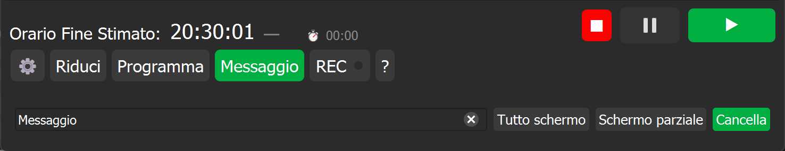
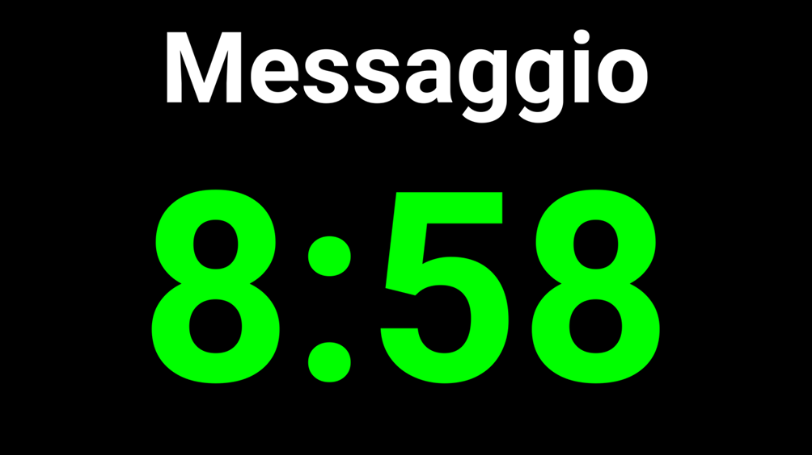
Quando si invia un messaggio, compare automaticamente una finestra di anteprima ridimensionabile e spostabile che mostra esattamente ciò che l'oratore vede nel monitor Contatempo. Questo consente di verificare in tempo reale la visualizzazione del messaggio e del timer.
Questa è la pagina web visualizzabile quando si è connessi alla stessa rete dell'applicazione. Permette di mostrare in remoto il contatempo su dispositivi come proiettori, tablet o computer esterni — utile per il presidente che segue il timer delle varie parti. In questo modo si può monitorare l'andamento dell'adunanza in tempo reale e stampare la scaletta direttamente dal browser.
Per la configurazione del Monitor Web e del server, vedi 9. Server nei pannelli impostazioni.
Dal browser puoi:
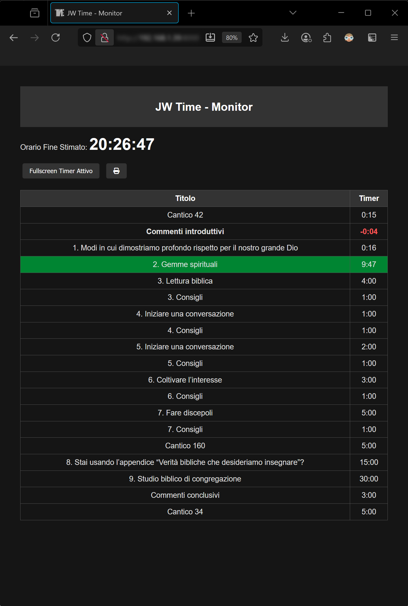
In questa parte puoi configurare il comportamento dell'app: dalle impostazioni generali (lingua, formato 12/24h e Schermo Contatempo), alla pianificazione delle adunanze (popup e monitor dedicato), fino a Monitor Web & Server e Backup & Ripristino.
Il tasto SALVA applica tutte le modifiche.
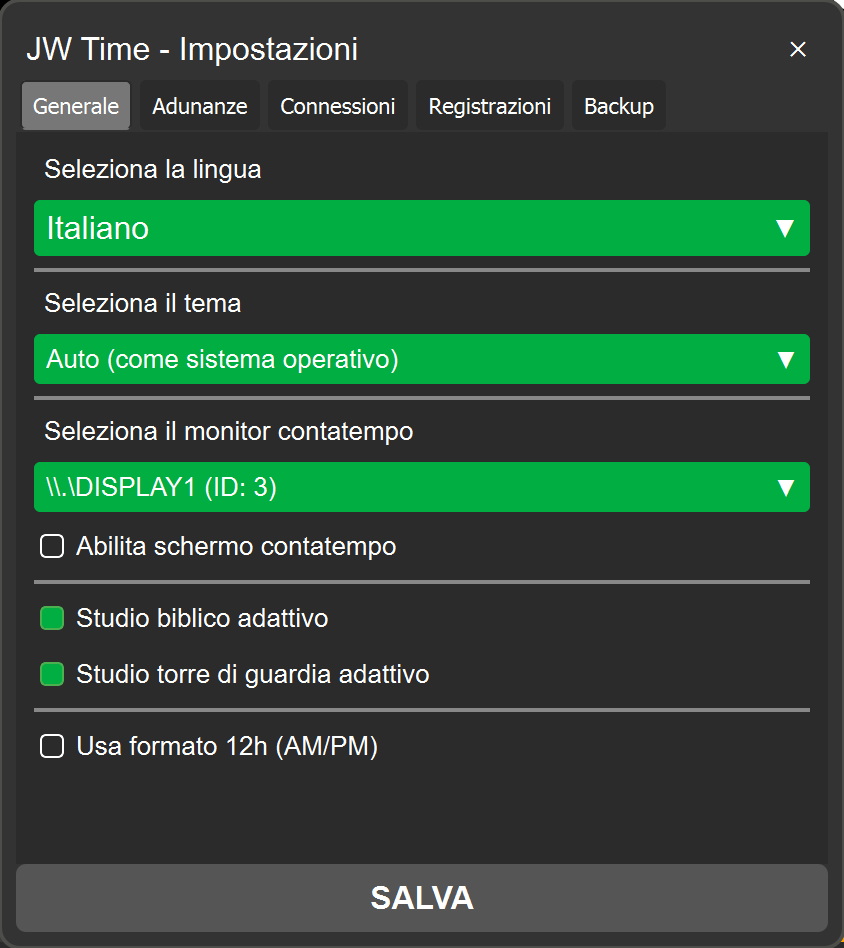
Questo pannello serve a programmare il conto alla rovescia di inizio adunanza e far comparire automaticamente un popup all'orario stabilito, con il tuo messaggio personalizzato. Imposti giorno, orario e anticipo (in minuti) con cui vuoi far partire il countdown; allo scadere, il popup si chiude da solo.
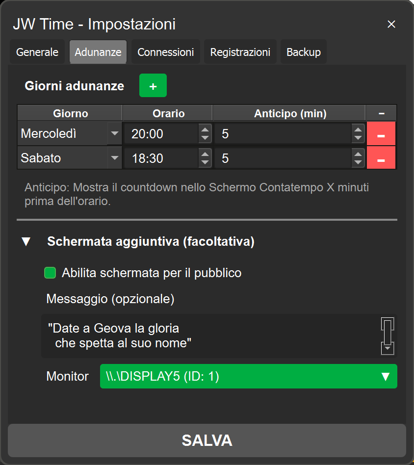
Scrivi il testo che apparirà nel popup insieme al countdown (es. "Benvenuti — l'adunanza inizia tra poco"). Mantienilo breve e leggibile.
Nota: questa funzione non cambia la durata dell'adunanza e non influisce su "Orario Fine Stimato".
Questo pannello gestisce la connettività dell'app: dal Monitor Web per visualizzare il contatempo via browser, ai test di connessione avanzati e alla gestione dei log.
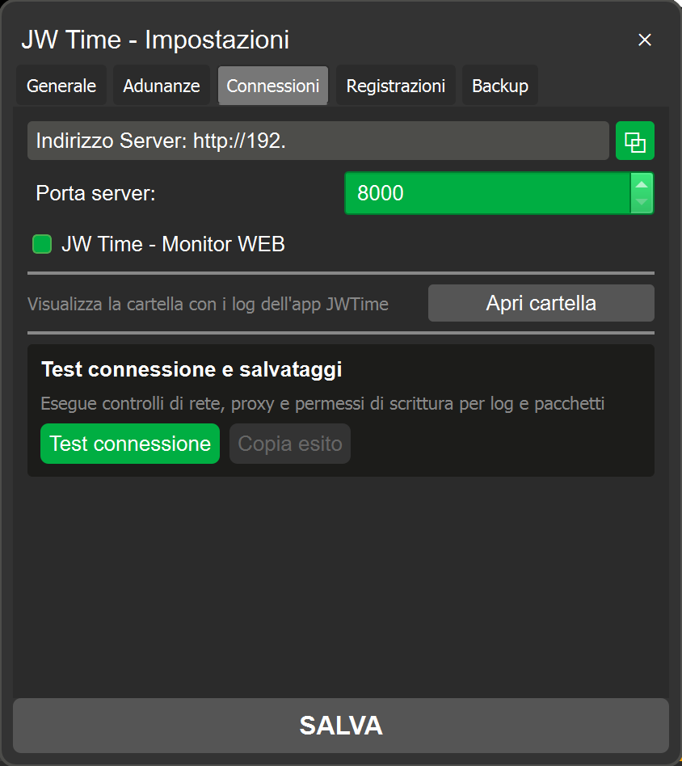
Apertura diretta cartella log dalle impostazioni con messaggi più chiari e utili per il debugging.
La versione 2.0 introduce una nuova funzione di registrazione audio delle adunanze, accessibile dalla scheda "Registrazioni" nelle impostazioni e dal tasto REC nella finestra principale.
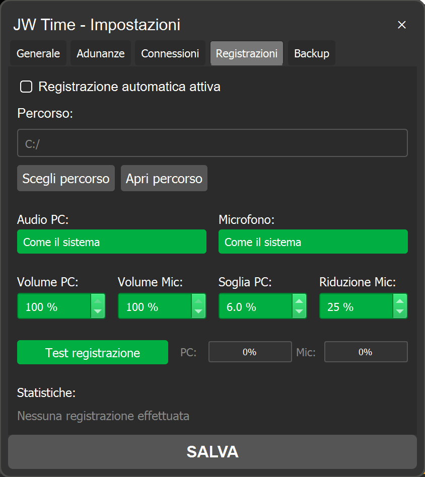
Questo pannello permette di gestire i backup delle impostazioni e dei programmi settimanali, sia per l'uso normale che per la modalità OFFLINE.
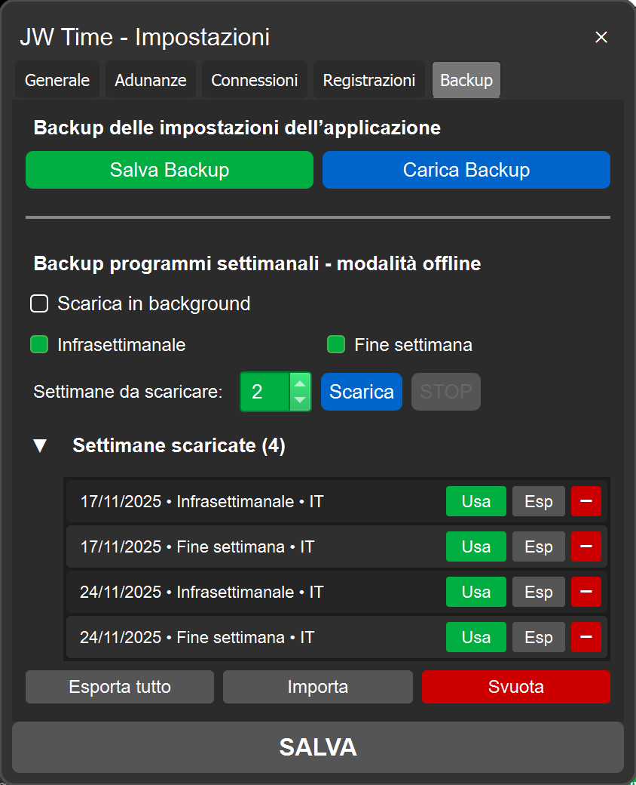
Backup automatico dei programmi settimanali:
Backup esportati per uso OFFLINE: